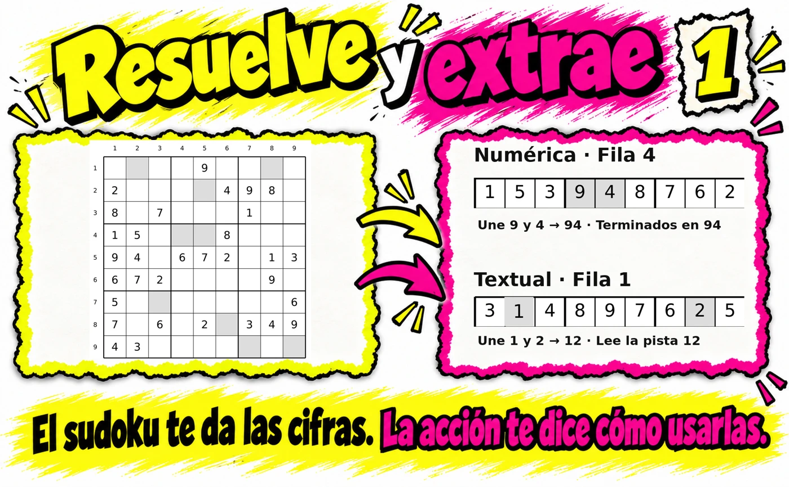
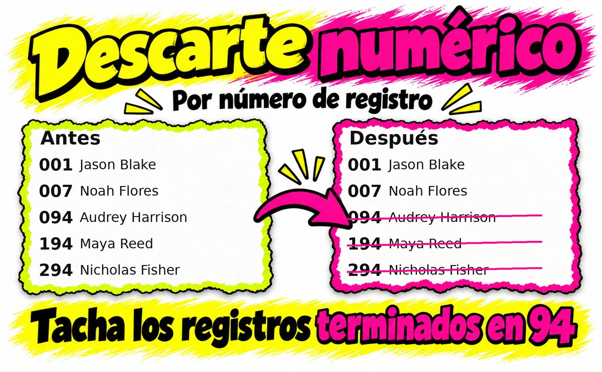
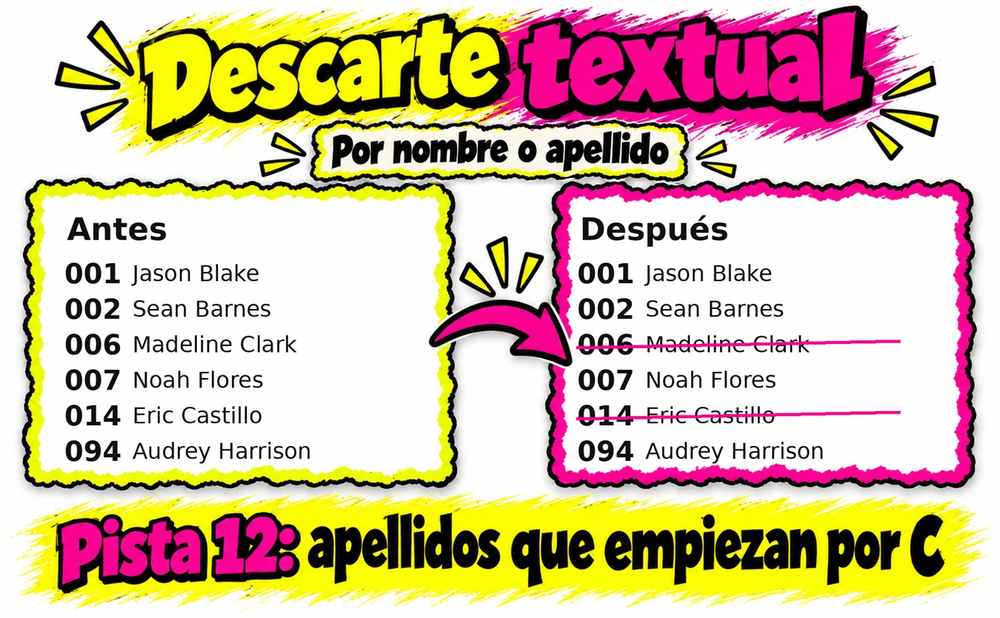
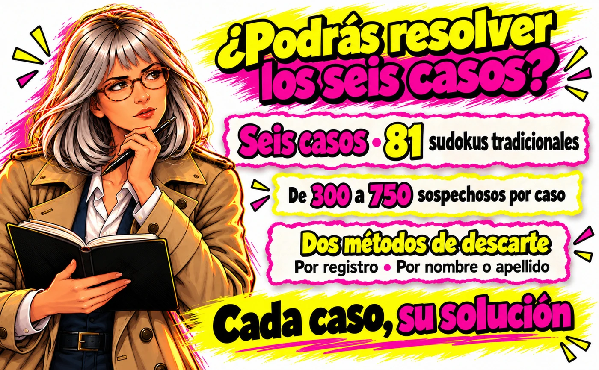

Resuelve. Sigue la pista.
Descubre quién queda.
Seis casos independientes, 81 sudokus clásicos y cientos de sospechosos por descartar.
Libro en papel · Tapa blanda · Para adultos

La investigación está en tus manos.
Resuelve el sudoku. Sigue la pista. Tacha sospechosos. ¿Quién queda?
6 casos independientes · 81 sudokus clásicos · De 300 a 750 sospechosos por caso
Cada sudoku resuelto te permite obtener nuevas pistas para descartar sospechosos. Acompaña a la investigadora Mara Grant, sigue los avances de cada misterio y reduce la lista hasta identificar a los responsables.
¿Quién queda? combina los pasatiempos de siempre con una mecánica de investigación: las cifras de las casillas sombreadas se convierten en pistas que aplicarás al panel de sospechosos.
Cómo se juega
• Resuelve un sudoku tradicional de 9 × 9. • Extrae las cifras de las casillas sombreadas. • Sigue la pista y tacha los sospechosos que cumplan su condición. • Continúa la investigación hasta resolver el caso.
Utilizarás dos tipos de pistas: numéricas, para descartar por número de registro, y textuales, para descartar por características del nombre o apellido.
Dentro del libro
• 6 misterios independientes, con sus historias, avances y resoluciones. • 81 sudokus clásicos, con sus soluciones para comprobar los resultados. • Paneles de entre 300 y 750 sospechosos por caso para registrar tus descartes. • Instrucciones ilustradas con ejemplos para aprender la mecánica paso a paso. • Un caso extra descargable y paneles para imprimir, accesibles mediante el código QR del interior.
Una propuesta para adultos que disfrutan de los sudokus, los juegos de lógica y los pasatiempos de misterio. Juega a tu ritmo, combina números y observación y disfruta de un rato de investigación en papel.
¿No sabes qué regalar?
Sorprende con una propuesta diferente que se disfruta con lápiz y papel. Un regalo original para un cumpleaños, Navidad, el amigo invisible, el Día del Padre o el Día de la Madre. Para tu pareja, tus padres, tus abuelos o alguien que quiera descubrir una nueva forma de pasar un buen rato: 81 sudokus, seis misterios y cientos de sospechosos por descartar. Tanto para quienes disfrutan de los pasatiempos como para quienes se animan a probar algo nuevo, con instrucciones ilustradas para aprender la mecánica paso a paso.
Abre el primer expediente. Resuelve, sigue la pista y descubre quién queda.
Mira cómo funciona.




Cuatro niveles de investigación.
Los niveles corresponden al número de sospechosos de cada caso.